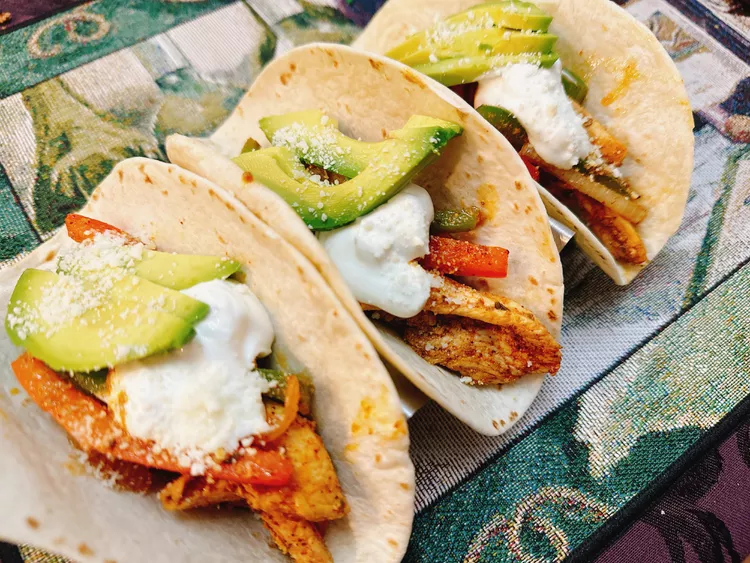

Chicken Fajita Tacos

Description
The chicken for these chicken fajita tacos marinates overnight, so you’ll
need to plan ahead, but when it comes to preparing dinner, your tacos will
be ready in under 30 minutes.
Ingredients
- 1/4 cup orange juice
- 2 tablespoons mild taco seasoning (see Note)
- 2 tablespoons vegetable oil
- 1 pound boneless skinless chicken breasts, cut into strips
- 1/2 onion, cut into strips
- 1/2 green bell pepper, seeded and cut into strips
- 1/2 red bell pepper, seeded and cut into strips
- 8 (6 inch) flour tortillas
- 1 avocado, pitted and sliced, or as needed
- 1/2 cup sour cream, or as needed
- 1/2 cup crumbled cotija cheese, or as needed
Steps
-
Combine orange juice, taco seasoning, and vegetable oil in a large
resealable bag. Add chicken, coat with the marinade, squeeze out excess
air, and seal the bag. Marinate in the refrigerator overnight.
- Heat a cast iron skillet over medium high heat.
-
Cook chicken in the hot skillet for 5 minutes. Add onion, green bell
pepper, and red bell pepper. Cook until peppers are crisp tender, 4 to 5
minutes. An instant-read thermometer inserted into center of chicken
strips should read 165 degrees F (74 degrees C).
-
Heat tortillas until soft and pliable. Top with chicken fajita mixture,
avocado, sour cream, and cotija cheese. Serve immediately.